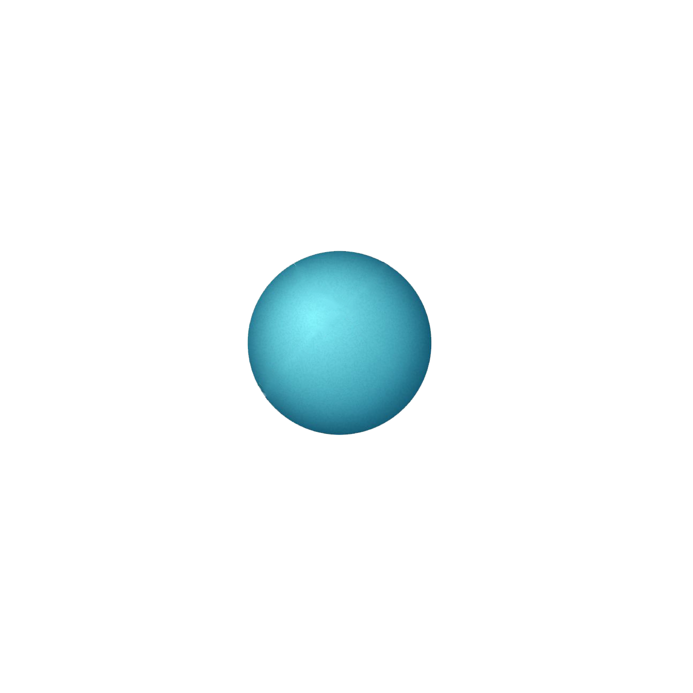

태양계에서 유일하게 스스로 빛을 내는 천체, 지구와 가장 가까운 별
수소와 헬륨으로 구성
지구의 약 109배
지구의 약 33만배(태양계 전체 질량의 약 99.8% 차지)
약 6000도
표면은 지구의 달과 매우 비슷하여, 대기가 없고 수많은 운석구덩이로 덮여있다.
공전주기는 88일밖에 되지 않는다. 자전주기는 약 58일의 주기.
낮에는 온도가 약 400도, 한반중에는 영하 170도.
지름 1만 2,1000km. 하루가 약 243일, 1년이 224일로 자전을 하는데 걸리는 시간이 공전을 하는데 걸리는 시간보다 길다.
금성은 지구에서 볼 때 태양, 달 다음으로 세 번째로 밝은 천체이다.
대기는 두꺼운 이산화탄소로 둘러싸여 있다. 표면의 열이 우주공간으로 쉽게 빠져 나가지 못하는 온실효과가 발생하여 표면온도가 뜨겁다.
대기가 두꺼워 반사되는 햇빛의 양이 많으며, 지구와도 가장 가까이 있기 때문에 8개 행성 중에서 가장 밝게 보인다
태양으로부터 세 번재 궤도를 돌며, 달을 위성으로 가지고 있다.
엷은 대기층으로 둘렀아ㅕ 있고, 특유한 지구자기를 가지고 있다. 지금까지 알려진 바로는 전 우주에서 고등생물이 서식하는 유일한 존재이다.
지름 1만 2713km. 최고온도 약 57도 최저온도 약 -89도
공전주기 365도 자전주기 24시간
지구에 가까이 있고, 생명의 존재 가능성이 제기되어 신비감과 공포감을 동시에 가져다준 행성.
지표부근의 대기압은 약 0.005기압으로 지구의 약 0.75%에 불과하다.
지름 6,780km. 하루가 약 24간 40분, 1년이 686일.
태양계의 네번째 행성.
대기는 이산화탄소와 소량의 질소, 아르곤 그리고 극미량의 산소로 구성되어 있다.
화성지표의 기압은 0.0063기압밖에 되지 않는데, 이는 화성의 질량이 작아 중력이 약하고, 그로 인해서 산소 같은 분자량이 작은 기체를 잡을 중력이 부족하기 때문이다.
태양계 내에서 가장 크고 무거운 행성으로 지구보다 지름이 약 11배가 크다.
부피는 지구의 1400배가 되고 질량이 지구의 약 318배이고 밀도는 지구보다 낮다.
수소와 헬륨 등의 기체로 이루어져 있다. 빠른 자전에 따른 대류현상 때문에 표면에 줄무늬가 만들어진다. 뜨거운 공기가 상승하는 지역은 밝게, 차가워진 공기가 하강하는 지역은 어둡게 보인다.
행성 중에서 가장 아름다운 고리를 가지고 있다. 이 고리는 1만개가 넘는 얇은 고리가 모여 보이는 것인데, 약 7만km의 두께를 형성하고 있다.
고리에 있는 작은 알갱이부터 10m가 넘는 크기의 얼음들이 빛을 약 80%정도까지 반사시켜 다른 행성에 비해 고리가 더욱 뚜렷하게 보인다. 또한 고리의 중간에는 안과 밖을 구분 짓는 검은 선인 카시니의 틈도 보인다.
토성의 대기는 목성처럼 수소와 헬륨으로 이루어져 있으며, 위도마다 자전 속도가 다르다. 밀도는 너무 작아서 만약 토성을 물 그릇 속에 넣는다면 물 위에 떠 있게 될 것이다.
가지고 있지만 천왕성의 고리는 검은 물질로 되어있기 때문에 어둡게 보인다.
천왕성의 특이한 점은 자전축은 약 97도 기울어져 있어 공전 궤도면에 거의 평행하게 누워서 자전하는 것이다. 따라서 남북극은 항상 태양이나 지구를 향해 있게 된다.